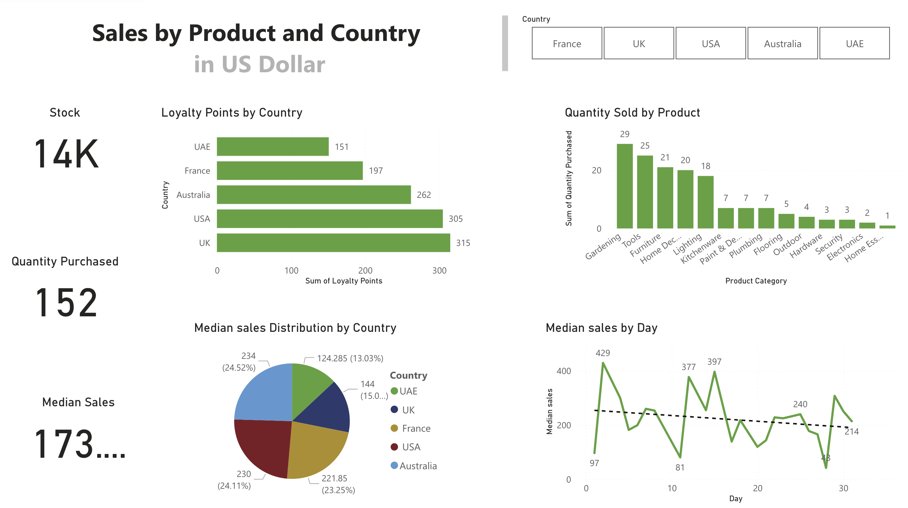
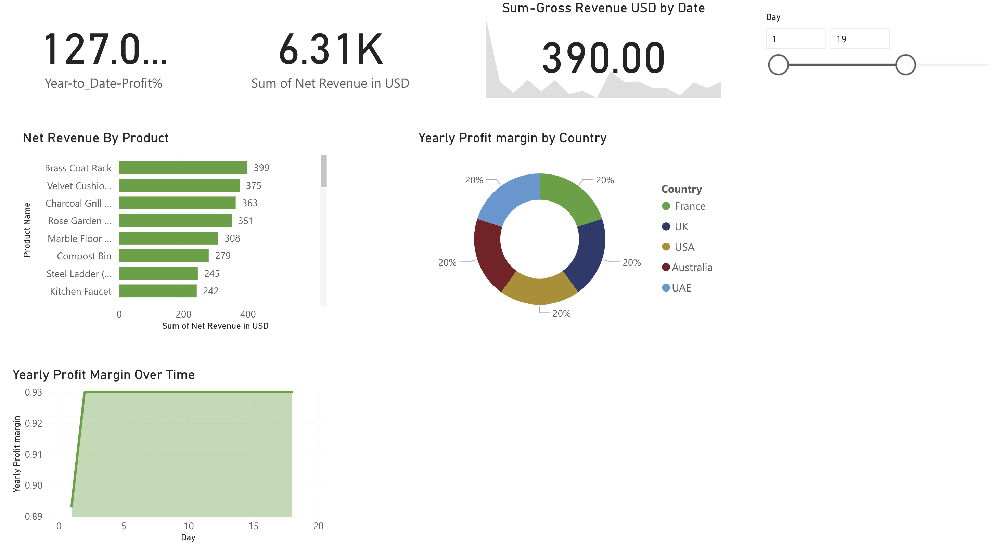
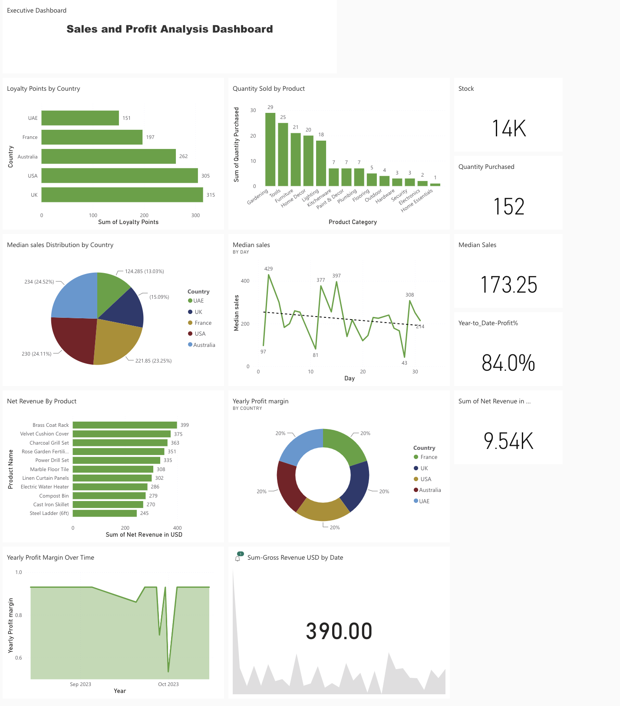

Microsoft Deploy and Maintain Power BI Assets Capstone Project
Deliverables
Sales Report
Profit Report
Executive Dashboard
Introduction
The Capstone project takes a scenario-based approach simulating the demands of a real business environment requiring proficiency in the techniques learned throughout the professional certificate.
The Situation
As a Business Analyst working for ‘Tailwind traders’, a fictional
company, I was supposed to create an executive dashboard that is
mobile-friendly and displays:
• Sales summaries on product quantities and median sales trends.
• Profit metrics such as net revenue and yearly profit margin by
country.
• Card visualisations for quick insight
The Brief
I was given a collection of excel files containing sales, purchase and
countries records, and I also used a simple python code to read data on
Currency exchange rate and create a data frame.
My goal was to use Power BI and DAX to design, build and deploy reports
and dashboards to share across the organisation.
The Objectives
• Prepare the data.• Model the data.
• Create model calculations using DAX and optimize model performance.
• Create dashboard & reports for usability, storytelling, and identifying patterns and trends
•Configuring alerts
• Deploy and maintain Deliverables
Data Prep
Data Preparation in Excel
The sales data in excel was prepared to ensure accuracy and for loading into power BI. Additionally, Gross Revenue, total tax and net revenue columns were calculated.
Data Profiling
Sales, Purchases, Countries and historical currency exchange data were loaded into Power BI. Data profiling was done to identify data anomalies, examining data structures and interrogating column properties and statistics.
Design and Develop data model
New tables, Calendar and Sales in USD were created in the query editor and the relationships among the tables were defined.
Calculation of Financial Measures Using DAX
Financial measures were calculated for the assessment of the financial performance of the company.